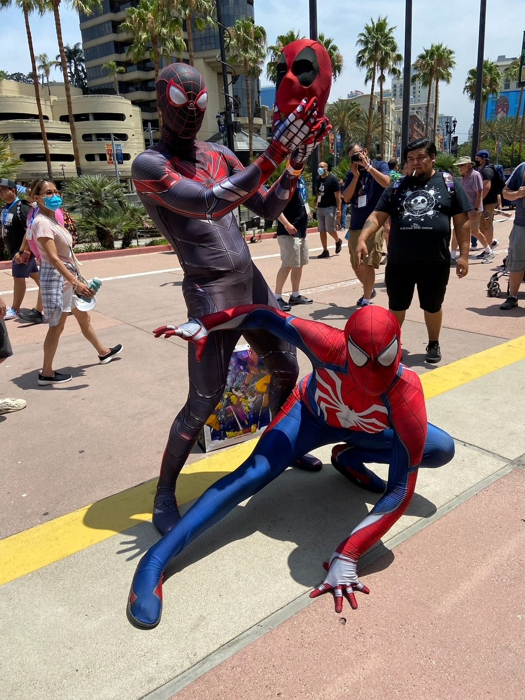
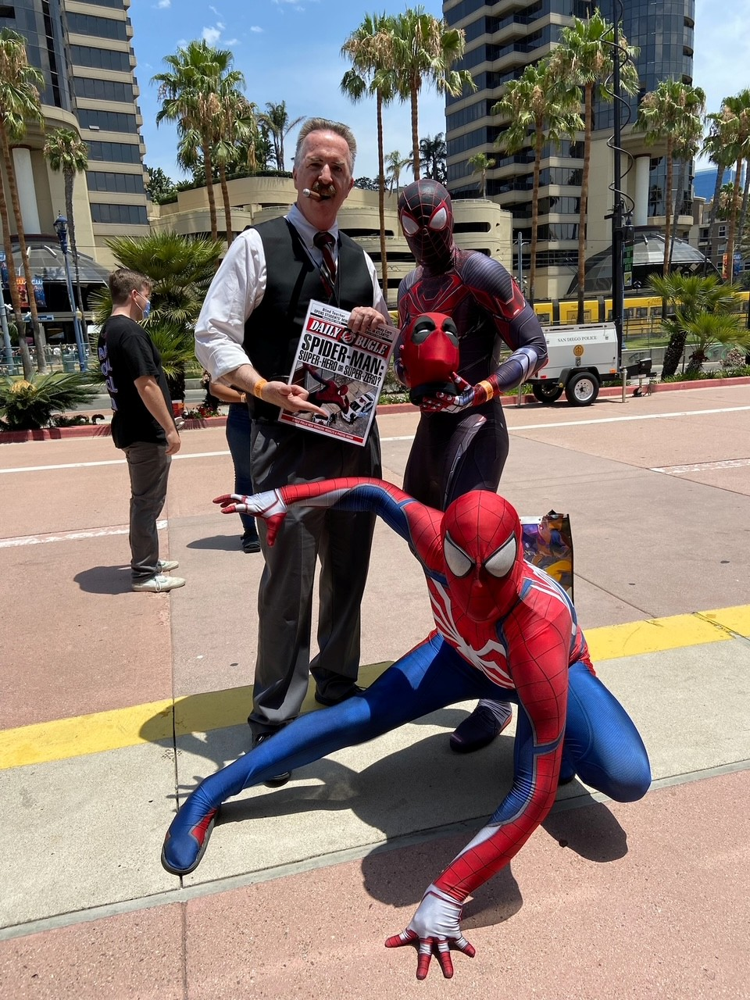
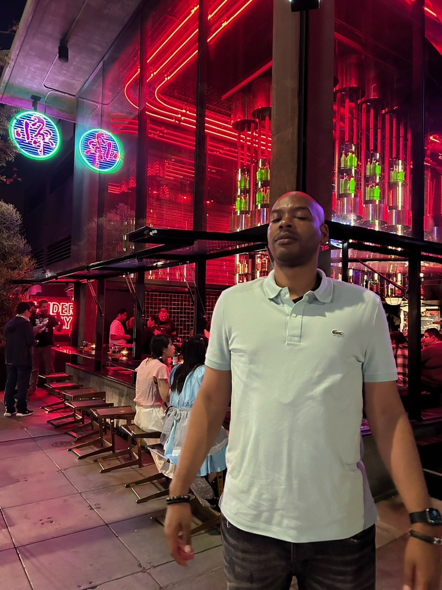

About Me
Hi, my name is Brandon, and I am a passionate data analyst with experience in uncovering insights from complex datasets. With tools like SQL, Power BI, and Python, I transform data into meaningful stories.
In my free time, I enjoy hiking, photography, and exploring creative projects that fuel my curiosity. I’m always looking for ways to solve puzzles and provide value to the projects I take on.
Feel free to connect with me to discuss projects, collaborations, or just to say hi!


